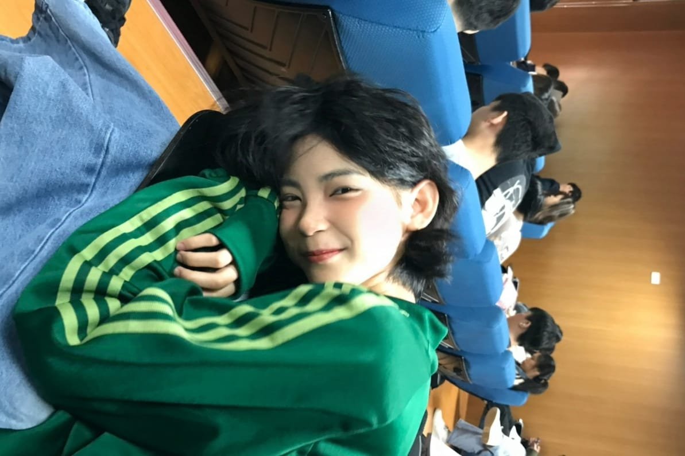
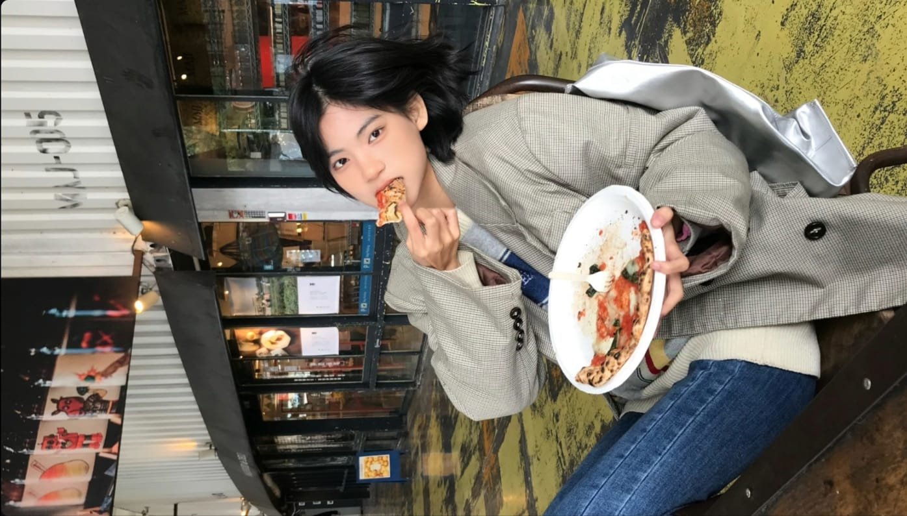

Tentang Kami
Apa yang kami lakukan

Awal Mula
Berdiri sejak Maret 2025, Teman Muda Aktif lahir dari kegiatan sederhana berbagi makanan di bulan Ramadan. Kini berkembang menjadi komunitas relawan muda yang aktif dalam berbagai kegiatan sosial.
Visi & Misi
Menjadi wadah generasi muda untuk tumbuh peduli, inklusif, dan inspiratif. Kami berkomitmen mendorong keterlibatan anak muda melalui aksi nyata yang berkelanjutan dan berdampak positif bagi masyarakat.

Non Profit & Pendanaan
Sebagai komunitas non profit, seluruh kegiatan kami dijalankan dari kontribusi anggota yang terlibat serta dukungan donasi dari masyarakat dan mitra yang peduli.